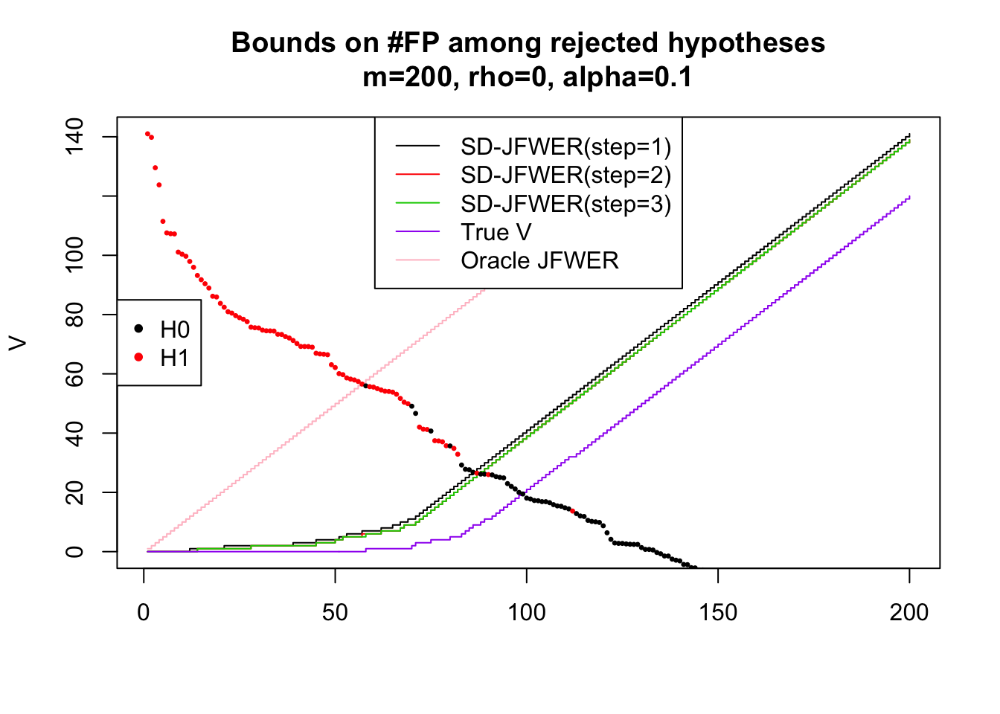

Step-down joint Family-Wise Error Rate control
Pierre Neuvial
2017-12-20
library("sansSouci")Simulation settings
Parameters:
m <- 2e2
rho <- 0
n <- 123
pi0 <- 0.6
B <- 1e3
#set.seed(0xBEEF)
sim <- simulateEqui(m, rho, B, pi0, SNR=3)
X0 <- sim$X0
x <- sim$x
H0 <- which(sim$H==0)
H1 <- which(sim$H==1)Show test statistics
pch <- 20
plot(x, col=1+sim$H, main="Test statistics", pch=pch)
legend("topleft", c("H0", "H1"), pch=pch, col=1:2)
Step-down JFWER control
alpha <- 0.1
res <- jointFWERControl(X0, refFamily="kFWER", alpha=alpha, stat=x)## [1] "Joint Family-Wise Error Rate control: Step down procedure based on kFWER family"thr <- res$thr
thrMat <- res$stepsDown$thrConfidence envelopes
o <- order(x, decreasing=TRUE)
xo <- x[o]
Vbar <- upperBoundFP(xo, thr) ## default is flavor "Roquain2014"
VbarM <- upperBoundFP(xo, thr, flavor="Mein2006") ## faster for now
identical(Vbar, VbarM) ## Generally TRUE## [1] TRUEbounds <- apply(thrMat, 2, function(thr) upperBoundFP(xo, thr, flavor="Mein2006"))True number of false discoveries among first rejections
V <- cumsum(o %in% H0)“Oracle” JFWER thresholds
X0.Oracle <- X0[-H1, ]
x.Oracle <- x[-H1]
res.Oracle <- jointFWERControl(X0.Oracle, refFamily="kFWER", alpha=alpha, stat=x.Oracle)## [1] "Joint Family-Wise Error Rate control: Step down procedure based on kFWER family"thrO <- c(res.Oracle$thr, rep(-Inf, length(H1)))
xo.Oracle <- x.Oracle[order(x.Oracle, decreasing=TRUE)]
VbarO <- upperBoundFP(xo.Oracle, res.Oracle$thr, flavor="Mein2006")Graphically:
nSteps <- ncol(thrMat)
cols1 <- seq.int(nSteps)
ltys1 <- rep(1, nSteps)
ttag <- paste("m=", m, ", rho=", rho, ", alpha=", alpha, sep="")
ttl <- paste("Bounds on #FP among rejected hypotheses", ttag, sep="\n")
xmax <- min(200, m)
ymax <- bounds[xmax, 1]
matplot(bounds, t='s', lty=1, ylab="V", col=cols1,
main=ttl, xlim=c(1, xmax), ylim=c(0, ymax))
cols2 <- c("purple", "pink")
ltys2 <- rep(1, 2)
lines(V, col=cols2[1], t="s", lty=ltys2[1])
lines(VbarO, col=cols2[2], t="s", lty=ltys2[2])
lgd <- c(paste("SD-JFWER(step=", 1:nSteps, ")", sep=""), "True V", "Oracle JFWER")
ltys <- c(ltys1, ltys2)
cols <- c(cols1, cols2)
legend("top", lgd, col=cols, lty=ltys)
xSc <- x/max(x)*ymax ## scaled test statistics (for display)
colStat <- 1+sim$H
points(xSc[o], col=colStat[o], pch=pch, cex=0.5)
legend("left", c("H0", "H1"), pch=pch, col=1:2)
Session information
sessionInfo()## R version 3.4.1 (2017-06-30)
## Platform: x86_64-apple-darwin15.6.0 (64-bit)
## Running under: OS X El Capitan 10.11.6
##
## Matrix products: default
## BLAS: /Library/Frameworks/R.framework/Versions/3.4/Resources/lib/libRblas.0.dylib
## LAPACK: /Library/Frameworks/R.framework/Versions/3.4/Resources/lib/libRlapack.dylib
##
## locale:
## [1] en_US.UTF-8/fr_FR.UTF-8/en_US.UTF-8/C/en_US.UTF-8/en_US.UTF-8
##
## attached base packages:
## [1] stats graphics grDevices utils datasets methods base
##
## other attached packages:
## [1] sansSouci_0.4.12
##
## loaded via a namespace (and not attached):
## [1] Rcpp_0.12.14 matrixStats_0.52.2 lattice_0.20-35
## [4] digest_0.6.12 rprojroot_1.2 grid_3.4.1
## [7] backports_1.1.1 magrittr_1.5 evaluate_0.10.1
## [10] stringi_1.1.6 Matrix_1.2-12 rmarkdown_1.8
## [13] tools_3.4.1 stringr_1.2.0 yaml_2.1.14
## [16] compiler_3.4.1 htmltools_0.3.6 knitr_1.17